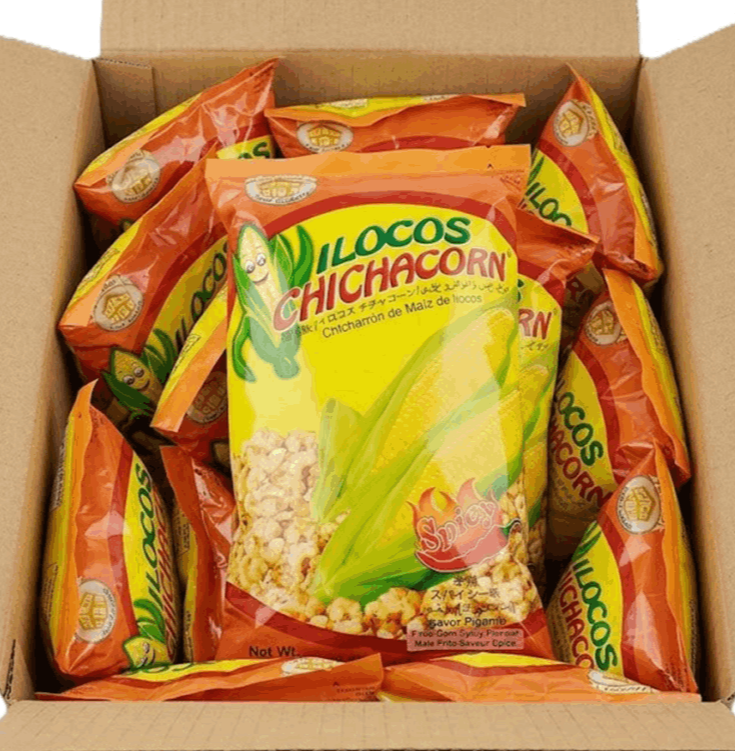

Product Description:
Ilocos Chichacorn is a popular Filipino snack originating from Ilocos Norte. Often called a lighter, crunchier version of "cornick," it is made from glutinous white corn kernels that are boiled, sun-dried, and then deep-fried.
The name "Chichacorn" is a blend of chicharon (pork rinds) and corn, referring to its signature crispy texture that mimics the crunch of pork cracklings without using
Product Type:
Name: Ilocos Chichacorn
Flavor: Spicy
Net Wt. 350 grams
Quantity: 24 packs
Price: $65.00
